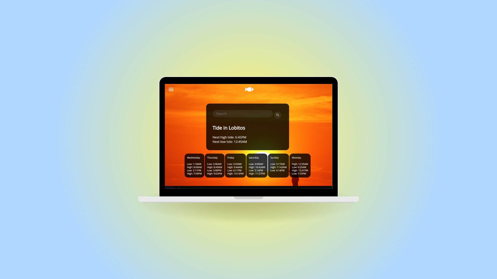

Engineers
Without
Borders

group project - web, 2021
The Engineers Without Borders project was a group project undertaken by a select group of computer science
students at the University of East Anglia, in collaboration with environmental association Engineers Without Borders UK. As part of a software
engineering team, I helped to design and produce a web app, proposing a solution to providing up-to-date weather and tidal information to residents
of the small fishing village of Lobitos in Peru. The app was designed with functionality and accessibility in mind, and was made compatible
with various browsers and systems. The app was also designed with functionality for local fishers to create an account and record information for
business. My primary role in this project was UI and UX design, which involved leading the design from wireframe to development using CSS and
JavaScript, and liasing with Engineers Without Borders representatives on design choices.